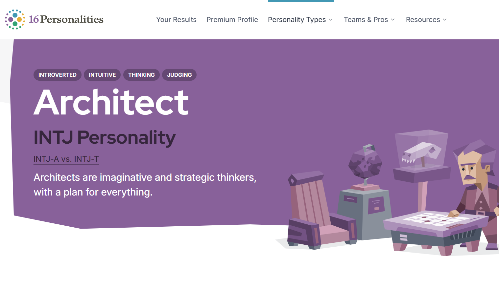

Leadership & collaboration
Assistant R&D Secretary at the Ergonomics Society. Graphics Design & Media Secretary at Kaizen SUST, creating the page’s videos and visuals.
SUST • INDUSTRIAL & PRODUCTION ENGINEERING
Engineering mindset. Creative execution. A continuous work in progress.
Beyond individual projects, I value the teams, responsibilities and practical skills that shape how I work.
Assistant R&D Secretary at the Ergonomics Society. Graphics Design & Media Secretary at Kaizen SUST, creating the page’s videos and visuals.
Shomvob, HDNB and First National Research Festival (CUCSU). Named Best Campus Ambassador in the Shomvob Campus Ambassador Program 2026.
Supported participant databases, outreach tracking and event logistics for a research bootcamp.
I plan, shoot and edit short-form videos and reels, from the idea and hook to the final cut. My campaign and venture content has passed 20K views and contributed to paid registrations.

Strategic thinking, system-level understanding and structured planning are the traits I try to bring into simulations, case work and business decisions.
I’m pursuing a B.Sc. in Industrial and Production Engineering at SUST (expected 2028) and co-founded Ben Rich, a leather products wholesale and retail business I’ve helped run since November 2022.
I work across case analysis, COMSOL simulation, CAD, research, business operations, video content and data analytics. I enjoy learning new tools and applying them to practical problems.
One signature project from each field. Explore the complete collection inside each category.